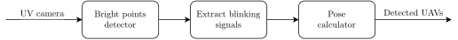
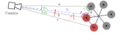

2 Ultra-violet Direction and Ranging
The Ultra-violet Direction and Ranging (UVDAR) system, developed by the esteemed Multi-robot system group at CTU [3], revolutionizes relative localization through the implementation of computer vision techniques. Comprised of active UV LED markers (395nm) and an industrial-grade camera (mvBlueFOX MLC200wG) equipped with a UV bandpass filter and fisheye lens, UVDAR excels at accurately distinguishing active markers from the background. This exceptional capability enables the system to operate effectively under diverse lighting conditions, ensuring reliable performance. For a visual representation of the UVDAR system, refer to Figure 2.1, which provides an example view captured by the camera with extracted bright spots.
Figure 2.2 presents a comprehensive overview of the UVDAR system, showcasing its data flow and functionality.

The bright points detector step uses Features from accelerated segment test (FAST) algorithm to extract the UV markers. The FAST algorithm is a method for detecting corners in images, which are useful for tracking and mapping objects in 3D model-based tracking systems. It was introduced by Edward Rosten and Tom Drummond in 2005 [1]. It uses a 16-pixel circle around a candidate point and compares the intensity of the pixels with a threshold to determine if the point is a corner. It also uses a high-speed test and machine learning techniques to improve the performance and accuracy of the corner detection [1]. The FAST algorithm can perform full-frame real-time feature detection and can handle large prediction errors and rapid movements [1]. The implementation of the FAST algorithm can distinguish sun and UV markers, as the sun is a major UV light source. Recently great effort was made by MRS group to implement FAST using GPU resources to offload CPU.
The extract blinking signals step uses 4D hough tranformation to evaluate the blinking frequency of the UV LED marker. The step involves buffering the extracted bright points as t-points \(\begin{bmatrix} x & y & t \end{bmatrix}\) from multiple frames and processing them by the Hough transformation [2]. The Hough transformation is used to approximate the motion of t-points with t-lines. The presence of t-points within t-lines is used to match a blinking signal with a predefined sequence ID.
The pose calculator will perform the final result, as it can assign the retrieved markers to a physical UAV model, estimate its position, orientation and covariance matrix. Figure 2.3 provides a visual representation of the geometric interpretation involved in the pose calculation process.
